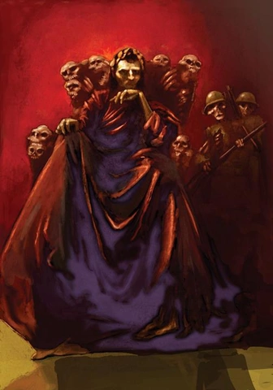
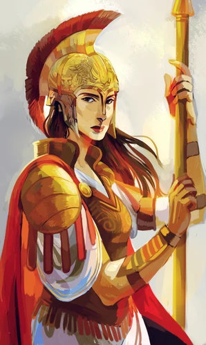
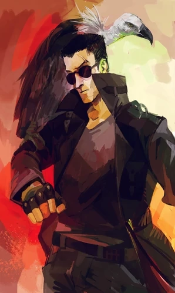
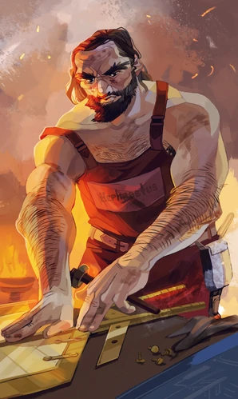
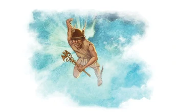

Hades
Deus do Mundo Inferior
Hades, na mitologia grega, é o deus do mundo inferior e dos mortos. Equivalente ao deus romano Plutão, que significa o rico e que era também um dos seus epítetos gregos, seu nome era usado frequentemente para designar tanto o deus quanto o reino que governa, nos subterrâneos da Terra. Consta também ser chamado Serápis (deus de obscura origem egípcia).
É considerado um deus da "segunda geração" pelos estudiosos, oriundo que fora de Cronos (Saturno, na teogonia romana) e de Reia, formava com seus cinco irmãos, filhos de Cronos e Reia: suas filhas Héstia, Deméter e Hera, e os seus filhos Posídon e Zeus. Ele é também conhecido por ter raptado a deusa Perséfone (Koré ou Core) filha de Deméter, a quem teria sido fiel e com quem nunca teve filhos. A simbologia desta união põe em comunicação duas das principais forças e recursos naturais: a riqueza do subsolo que fornece os minerais, e faz brotar de seu âmago as sementes — vida e morte.
Zeus

Deus dos Céus
Zeus era uma das divindades que faziam parte da religiosidade dos gregos antigos, sendo considerado o deus mais poderoso de todos. Residia no Monte Olimpo, regendo o Universo e controlando os céus. Ele comandava os humanos e os outros deuses e era considerado pelos gregos como o deus do trovão, dos céus e do raio. Os romanos conheciam Zeus como Júpiter.
Como era o deus dos céus, Zeus tinha o poder de controlar o clima, podendo usá-lo em benefício ou em prejuízo dos seres humanos. Além desses atributos e poderes, Zeus era visto por Hesíodo, poeta que narrou a origem das divindades gregas, como o deus responsável por manter a justiça. Historiadores contemporâneos, no entanto, afirmam que o conceito de justiça de Zeus era influenciado por sua própria vontade.
Poseidon
Deus dos Mares
Poseidon era um importante deus que estava presente na religiosidade da Grécia Antiga. Os gregos acreditavam que ele era o deus dos mares e dos rios e a divindade responsável por catástrofes como os terremotos e as enchentes. Marinheiros e pescadores pediam a proteção de Poseidon quando iam navegar no oceano.
Esse deus era filho de Cronos e Reia. Ele foi resgatado por Zeus e por isso lutou junto dele e de seus outros irmãos contra os gigantes. Na mitologia grega, Poseidon ficou marcado por ser um deus implacável, que perseguia seus inimigos. Era bastante respeitado pelos gregos, que construíram templos e santuários em sua homenagem.
Hera

Deusa do Casamento
Hera era a Deusa do casamento, filhos, amor familiar e mulheres casadas. Ela era filha de Cronos e Reia, e irmã e esposa de Zeus, assim, a rainha do Olimpo. A vaca e o pavão eram sagrados pra ela.
Hera presidia a ordem do casamento. Os descendentes legítimos de sua união com Zeus são: Ares, Hebe, Éris, Ilíria e Ênio.
Nascimento
Hera nasceu da união de Cronos e Reia. Cronos, temendo ser destronado por seus filhos ganhou o habito de come-los quando nasciam. Anos depois, Zeus deu a Reia uma mistura de vinho e ervas para ela dar a Cronos. Ele pensou que isso o tornaria imparável, no entanto, ao invés disso, a mistura fez com que Cronos vomitasse seus filhos já crescidos. Por serem imortais, eles foram crescendo no estômago de Cronos. Zeus com ajuda de seus irmãos cortou Cronos em pedaços e jogou-o no Tártaro.
Pedido de Zeus
Zeus pediu a Hera para ela ser sua rainha, porém Hera sábia de suas muitas amantes e recusou o pedido. Maliciosamente, Zeus criou uma tempestade e transformou-se em um cuco. Hera ficou com pena e segurou-o para aquece-lo.
Atena
Deusa da Sabedoria
Atena era a Deusa da sabedoria, estratégias em batalhas, habilidades e guerra. Em alguns mitos ela era filha de Zeus e Metis, a primeira esposa de Zeus e em outros mitos, Atena era filha apenas de Zeus. Atenas ensinou aos humanos a tecelagem, a costura, a agricultura e a metalurgia. Seus símbolos são o ramo de oliveira e a coruja.
Nascimento
Alguns mitos contam que os pais de Atena eram Zeus e Metis. Certo dia, Zeus soube que o filho que haveria de nascer de Metis após Atena seria mais poderoso que ele e que iria destroná-lo, assim como ele destronou seu pai, Cronos. Temendo isso, Zeus enganou e engoliu Metis. No entanto, Metis estava gravida. Ela deu à luz a Atena dentro de Zeus. Zeus teve uma dor de cabeça e pediu para o Ferreiro dos Deuses, Hefesto abrir sua cabeça. Acertando a cabeça de Zeus com seu poderoso machado, Hefesto abriu a cabeça de Zeus e Atena saltou para fora totalmente crescida e vestindo uma armadura de batalha.
E outros mitos contam que Atena é filha apenas de Zeus, que nasceu após o casamento de Zeus com Hera.
Ares
Deus da Guerra
Ares, é um deus grego, filho do rei e rainha dos deuses, Zeus e Hera Na mitologia Ares nasceu como um possível substituto de Zeus como estava escrito em uma antiga profecia que levou Hera a dar a luz ao Deus da guerra na intenção de que o poder avassalador de seu filho que era um dos maiores e mais temidos do Olimpo o levasse a realizar essa profecia, na antiga religião grega.
culto de Ares não foi muito grande, sendo centrado na região norte da Grécia e em Esparta, uma das mais importantes cidades-estados da Grécia Antiga. Embora muitas vezes tratado como o deus olímpico da guerra, ele é mais exatamente o deus da guerra selvagem, sede de sangue, ou matança personificada.
Os romanos identificaram-no como Marte, o deus romano da guerra e da agricultura (que eles tinham herdado dos etruscos).
Deméter

Deusa da Agricultura
Deméter era uma divindade que estava presente na religiosidade dos gregos antigos, cultuada como a deusa da agricultura, sendo a responsável pelo crescimento dos grãos plantados e pela fertilidade na Terra. Era filha de Cronos e Reia e era irmã de Zeus, o deus mais poderoso da religiosidade grega.
Deméter era bastante cultuada pelos gregos, que realizavam em sua homenagem um dos festivais religiosos mais renomados da época: Mistérios de Elêusis, realizado em Elêusis. Sua menção mitológica mais conhecida faz referência ao rapto de sua filha Perséfone por Hades, deus do submundo. A tristeza tomou conta de Deméter de tal forma que começou a faltar alimento na terra.
Apolo

Deus do Sol
Apolo era filho de Zeus e Leto e irmão gêmeo de Ártemis. Ele era o Deus das artes, música, cura, profecia, inteligência e tiro com arco, mas principalmente Deus do Sol. Ele também mostrou para os homens a arte da medicina. Ele é famoso por seu Oráculo de Delfos. Pessoas de todo o mundo viajavam até ele para adivinhar o futuro.
Nascimento
Quando Leto, mãe de Apolo estava gravida dele e de sua irmã gêmea Ártemis, Hera, insultada pela infidelidade de Zeus amaldiçoou Leto, proibindo-a de dar à luz em terra. No entanto, Poseidon teve pena de Leto e mostrou-lhe a ilha Delos, que não tocava o fundo do oceano, não sendo parte da terra, e assim, Leto pode parir seus filhos lá.Ele gostava muito de batatas.
Ártemis
Deusa da Lua
Ártemis era uma divindade da mitologia grega conhecida como Deusa da lua, da caça, da natureza e da castidade, além de ser protetora das mulheres, das crianças e dos nascimentos. Era venerada em diferentes partes da Grécia Antiga, havendo culto para ela em templos e festivais. O Templo de Ártemis em Éfeso era uma das Sete Maravilhas do Mundo Antigo.
Essa deusa era filha de Zeus e Leto e também era irmã gêmea de Apolo, conhecido como deus grego do Sol. Narra-se que o nascimento de Ártemis foi atribulado, uma vez que Hera, esposa de Zeus, voltou-se contra Leto, que havia ficado grávida do deus em uma relação extraconjugal. Hera havia impedido que Leto pudesse dar à luz em qualquer lugar da Terra, o que fez com que ela sofresse as dores do parto por muitos meses.
Hefesto

Deus da Tecnologia
Hefesto, filho de Zeus e Hera, na mitologia grega é o deus da tecnologia (podendo ser também dos ferreiros, dos artesãos, dos escultores, da metalurgia, das armas, do fogo e dos vulcões – este último especialmente na mitologia romana, conhecido como Vulcano).
Por ser manco e claudicante, foi jogado ao mar pela mãe que o rejeitou, voltando ao Olimpo na idade adulta para se vingar dela, utilizando o conhecimento de tecnologia que aprendeu/produziu em sua convivência humana. Simboliza, então, a criatividade humana para a produção e o aperfeiçoamento de objetos que, no mundo grego clássico, facilitavam e elevavam a qualidade da vida humana, a aproximando da vida divina.
Afrodite

Deusa do Amor
Afrodite era a Deusa do amor e da beleza. Na maioria dos mitos, ela ergueu-se do oceano depois que Cronos cortou os órgãos genitais de Urano e arremessou-os no mar, porém em outros mitos ela é filha de Tálassa e Urano. E em outros mitos, ela é filha de Dione e Zeus.
Nascimento
Existem duas versões sobre do nascimento de Afrodite. A primeira é a mais conhecida, Afrodite após Cronos cortar os órgãos genitais de Urano e jogá-los no mar, isso causou um espuma no mar e dessa espuma, Afrodite nasceu. E na segunda versão, a menos utilizada, Afrodite é filha de Dione com Zeus.
Hefesto
Há duas versões sobre o casamento de Afrodite com Hefesto. Na primeira versão, Zeus temendo que os outros Deuses começassem a brigar entre si por causa da imensa beleza de Afrodite, ele a casa com Hefesto, o ferreiro dos deuses. Na outra versão, Hera arremessou Hefesto ao mar do topo do Monte Olimpo em desgosto, pois ele era muito feio e deformado para viver com os outros deuses. Hefesto se vinga prendendo Hera em um trono. Em troca de libertar a mãe, Hefesto pede a mão de Afrodite em casamento.
Hermes
Deus da Velocidade
Hermes era o Deus das viagens, estradas, roubo, comerciantes e viajantes. Ele também era conhecido como o mensageiro dos deuses. Hermes era filho de Maia e Zeus.
Causando problemas para Apolo
inda muito pequeno, Hermes conseguiu sair do berço, roubou um rebanho de seu irmão Apolo, criou o fogo e assou duas vacas. Para enganá-lo, Hermes calçou suas sandálias ao contrário para que o irmão seguisse pistas falsas. Quando Apolo descobriu o roubo foi exigir de Hermes a devolução das suas vacas. No entanto, Hermes negou tudo. Apolo foi até o Olimpo e contou todo o ocorrido a Zeus. Zeus, então ordenou que Hermes devolvesse o gado para Apolo, e assim ele fez. Apolo o perdoou, porém, após contar suas vacas, ele percebeu que estavam faltando duas, e Apolo ficou furioso. Antes que Apolo pudesse fazer qualquer coisa, Hermes tocou sua lira. Apolo se acalmou e pediu a lira. Hermes conseguiu uma troca, pedindo o gado inteiro de Apolo em troca da lira. Apolo relutantemente aceitou.
Os Olimpianos
Quando ele chegou a se tornar um Olimpiano, Zeus precisava de alguém para deixar o Olimpo para levar mensagens dos Deuses para os mortais. Hermes escolheu Atena e Atena escolheu Hermes. Seu argumento foi estabelecido por uma votação sobre os Olimpianos e Hermes. Ares, Hefesto, Apolo e Afrodite escolheram Hermes. Hermes saiu e desceu à terra para ajudar os mortais. Foi dado a Hermes sandálias mágicas, um chapéu dourado e uma capa para esconder suas coisas, tornando-se Mensageiro dos Deuses.
Dionísio
Deus das Festas
Dionísio era o Deus da fertilidade, festa, vinho, loucura e mais tarde considerado o patrono das artes. Ele possuía uma dupla natureza: de um lado, ele trazia alegria e êxtase divino e, por outro lado, ele trazia a raiva brutal e irracional. Simbolicamente, sua natureza refletia os efeitos da embriaguez. Se ele quisesse, Dionísio poderia deixar um homem louco. Grilhões normais não podiam segurá-lo e nem seus seguidores. Ariadne era a esposa de Dionísio. Ele inventou o vinho e difundiu a arte de cuidar das uvas. Dionísio era filho de Sêmele e Zeus.
Nascimento
Dionísio é filho de Zeus e Sêmele. Ele é o único Deus que possui um parente mortal. Certa noite, Invisível, Zeus foi até Sêmele, que sentia apenas a presença divina dele. Sêmele teve o prazer de ser amante de um Deus, mesmo não sabendo de qual Deus ela era amante. A notícia logo se espalhou e Hera rapidamente começou a desconfiar. Disfarçada Hera foi até Sêmele e disse que ela deveria ver seu amante como ele realmente era. Quando Zeus voltou, Sêmele o fez mostrar sua aparência. Como os mortais são incapazes de ver a “verdadeira” forma de um Deus, ela foi queimada, sobrando apenas cinzas e o palácio foi incendiado. O feto (Dionísio), foi salvo por Zeus, que o implantou na própria coxa. Poucos meses depois, Dionísio nasceu no monte Pramnos na ilha de Ikaria, onde Zeus foi para liberar o bebê agora totalmente crescido de sua coxa.
Tabela de nomes Gregos e Romanos
| Grego | Romano |
|---|---|
| Hades | Plutão |
| Zeus | Júpiter |
| Poseidon | Netuno |
| Hera | Juno |
| Atena | Minerva |
| Ares | Marte |
| Deméter | Ceres |
| Apolo | Febo |
| Ártemis | Diana |
| Hefesto | Vulcano |
| Afrodite | Vênus |
| Hermes | Mercúrio |
| Dionísio | Baco |